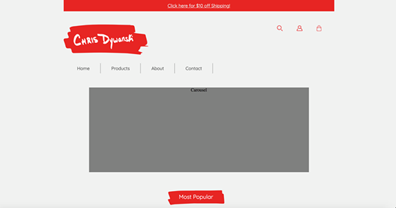

- Pace Marier
- FA / YSDN 1006
- March 28th, 2016
Peer Evaluation
For this peer evaluation I will be covering Chris Dywanski's website. First, the overall site structure is effective. There are an adequate amount of pages and they link to one another in a logical manner. The sites navigation bar looks a touch awkward. There is a border on the right side of each list item but there isn't a border on the left side of the first list item. Also since the navigation bar has the same background as the rest of the webpage, it looks like it was just placed as an after thought. Maybe the navigation bar should have a different background colour? The site logo is nice, it gives the entire page a handcrafted feel. I like the addition of the sale banner at the top of the webpage, but I feel like overall there are too many discounts which makes it look like you are trying to get rid of your products as opposed to selling quality wares. The carousel image is a different width from the product images. This looks awkward as gray boxes but may work as images depending on their content. There are three different image treatments being used: grey bordered images, rounded edged images, and plain square images. I'd recommend choosing one image treatment for the entire website. The colour choice is good and the red used makes the entire page pop out to the user. The icons in the top right corner look nice and fit with the sites general aesthetic style. The footer uses too many different text sizes, I believe that it would look nicer if the footer only had one or two text sizes. Also the all caps text in the footer could use a little more breathing room between the letters. The website is a good start, and I think that as it begins to be filled in with content the style will be more prevalent.
